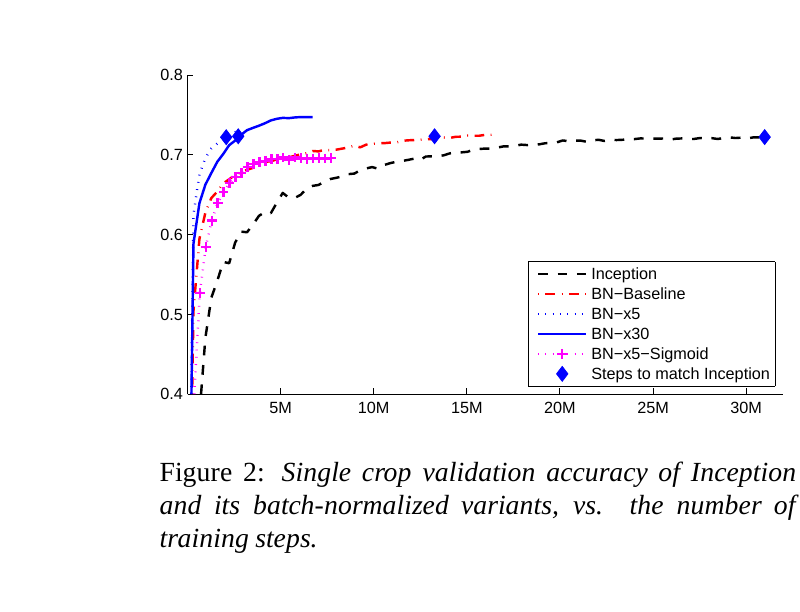
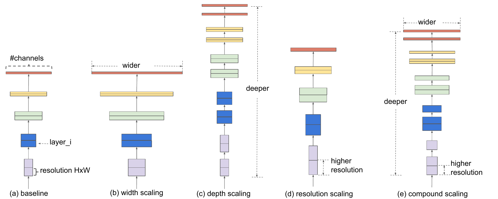
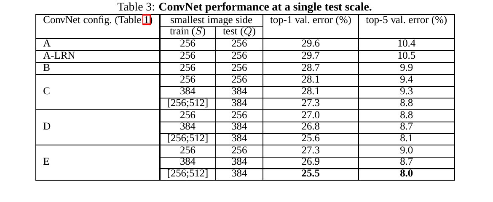

On this page
Let's learn about convolutional neural networks. I'm assuming you're mostly familiar with what CNNs are, and this tutorial is meant to refresh your memory on concepts you might have missed out on or forgotten.
Here is the whole reason CNNs exist, in one comparison. A fully connected layer looking at a 224x224 RGB image needs 224 x 224 x 3 = 150,528 weights for a single neuron. A 3x3 convolution kernel needs 3 x 3 x 3 = 27 weights, and it reuses those same 27 weights at every position in the image. Same job, roughly 5,000x fewer weights. That reuse is called shared weights, and it is the whole trick.
A convolution slides a small weight matrix, the kernel (or filter), over the input. At each position it computes a dot product between the kernel's weights and the local input patch it covers. The kernel learns to fire on things like edges and textures, and because the same kernel is applied to all spatial locations, it fires on those patterns wherever they appear. A vertical edge detector finds vertical edges in the top-left corner and in the bottom-right corner. No relearning per position.
Three things fall out of this. First, translation: a pattern shifted in the image still gets detected. Second, parameter efficiency: 27 weights instead of 150,528, as we just saw. Third, locality: each neuron only sees a small patch of the input, which matches how images work. Pixels far apart barely relate; pixels next to each other relate a lot. You can apply multiple kernels per layer to learn multiple features and channels.
Three knobs control a convolution layer. The kernel size is the patch the kernel sees; the larger the kernel, the more expensive it is computationally. Stride controls how far the kernel moves at each step. A larger stride results in fewer steps and acts as a form of downsampling. Padding inserts zeros around the input to preserve its size. Common types are valid (no padding), constant (a fixed number of zeros), and same (enough padding to keep the output size equal to the input size).
The formula for the output size is:
Read it in plain words: the output is how many kernel placements fit along the padded input. Term by term:
Let's take a look at how kernels are applied in a convolution layer using NumPy. We're sliding the kernel over the input, where i goes down the rows and j goes across the columns.
import numpy as np
def conv2d(input, kernel, stride=1, padding=0):
H_in, W_in = input.shape
K = kernel.shape[0] # Assume square kernel for simplicity
# Pad input
if padding > 0:
input = np.pad(input, ((padding, padding), (padding, padding)), mode='constant')
H_out = (input.shape[0] - K) // stride + 1
W_out = (input.shape[1] - K) // stride + 1
output = np.zeros((H_out, W_out))
for i in range(H_out): # Move down the rows
for j in range(W_out): # Move across the columns
i_start = i * stride
j_start = j * stride
patch = input[i_start:i_start + K, j_start:j_start + K]
output[i, j] = np.sum(patch * kernel)
return output
That's it. Multiply, add, move on. Nothing in this loop mixes channels or looks at distant pixels, which is exactly why conv layers are cheap and why they need stacking to see the big picture.
Okay, enough code. That loop is nine multiplies and an add, repeated until your eyes glaze over. Here is what it is actually doing. Pick a kernel, press play, and watch the right panel. The bright column that appears is the kernel shouting "I found my pattern" at every position along the bar. Move to the blur kernel and watch the bar smear. That is the whole idea: one small pattern detector, stamped everywhere.
The same kernel fires wherever the pattern appears. That is translation equivariance, and you just watched it happen. The input is a real-looking photo, but it is generated from the same 12x12 toy data, so the math is unchanged: the orange box is the 3x3 kernel window sliding over the photo. On the right, boxes mark where the kernel fires strongly: blue for a positive match, red for a negative one. Color scale: each kernel is normalized by its own strongest response over the whole map, so box intensity always means "fraction of this kernel's max".
How to play
Now, consider this example: let's say you want a receptive field of 5. You can get that with one 5x5 kernel layer. Or, you can get it with two 3x3 kernels with a stride and padding of 1. The two 3x3 kernels would actually have fewer parameters and can add more non-linearity, increasing expressiveness. A 5x5 has 25 weights; two 3x3s have 18, and you get a ReLU in between for free. For shallow models, a 5x5 might benefit from wide kernels, but even then, a dilated 3x3 can do the same task.
The receptive field of a neuron is the region of the input image that can influence that neuron's value. How much of the original input does this neuron get to see? It determines how much context the model has. A small receptive field sees local details, like edges, while a large receptive field sees global structures, like shapes and objects.
With stride, you increase the spacing between the receptive fields of adjacent neurons, not the size of the receptive field itself; each step just jumps farther. Stride controls the resolution and indirectly spreads the influence of each neuron over a wider input area.
Padding lets the kernel reach the edge of the input. It doesn't directly impact the receptive field of a single layer. However, without padding the input shrinks. Padding preserves the size, so when more layers are stacked, the receptive field grows. It allows for deeper models without the input shrinking too fast.
This is the part the old version of this tutorial got wrong, so let me do it carefully. Track two running numbers as you stack layers. $RF_l$ is the receptive field: how many raw input samples one output of layer $l$ can see. $\text{jump}_l$ is the effective step size: how far apart two neighboring outputs of layer $l$ sit, measured in raw input samples.
At the input itself, each step is one sample: $RF_0 = 1$, $\text{jump}_0 = 1$.
Why no dilation in the jump formula? Dilation spreads the taps inside one kernel, but it does not move neighboring outputs apart from each other. Only stride does that: with stride $s$, the next output starts $s$ steps later in the layer below, and each of those steps is $\text{jump}_{l-1}$ input samples wide.
Read it term by term. $RF_{l-1}$: what each tap of the new kernel already sees on its own. $(k_l - 1)$: the number of gaps between the first and last tap. $d_l$: each gap skips that many steps of the layer below. $\text{jump}_{l-1}$: each of those steps is that many raw input samples wide. So $(k_l-1) \cdot d_l \cdot \text{jump}_{l-1}$ is the fresh span the kernel reaches, and you add the patch each tap already covers.
Assume for a layer:
Then the receptive field for the next layer is:
You're adding 2 jumps of 2 pixels each because the kernel sees 3 inputs. The jump tells us how stretched the receptive field becomes. The more stride you use, the more your output is coarsely spread across the input. So, when a new kernel sees $k$ inputs, the total receptive field includes the jumps between those inputs.
Let's run the formula on a small realistic stack, the kind you'd see in the first block of a CIFAR model: conv 3x3 stride 1, conv 3x3 stride 1, maxpool 2x2 stride 2, conv 3x3 stride 1.
A single layer-4 neuron sees a 10-pixel patch of the original input. Notice the pooling layer barely grew the receptive field itself (6 vs 5), but it doubled the jump, which is what lets the final convolution reach 10. Stride doesn't grow the receptive field directly; it stretches the jump, and the stretched jump grows everything after it.
Enough theory. Here is a toy that makes the recurrence do something useful. Below is two seconds of fake sensor data: background wobble and noise, with a 300 ms burst of activity hiding in the middle, the kind of thing you would want a model to catch. Stack your layers, pick one output neuron, and the shaded window shows you exactly which chunk of the input that neuron sees. Change the knobs and watch the window, the output trace, and the sampling rates move.
Play with it: add layers and raise the dilation, and watch the shaded window grow until one neuron covers the whole 300 ms event. Flip a stride to 2 and watch the output trace get coarser while the output rate drops. Press Play to sweep the inspected neuron across the outputs and watch the window glide along the signal. The output trace is honest: each point is the input value at the center of that neuron's window, no learned weights involved.
How to play
Let us put the formula to work. Say sensory data comes in at 1kHz, and the activity you want to catch is about 300ms long. The model needs a receptive field of at least 300 samples. Here is a 7-layer design, computed layer by layer with the recurrence above. First block is a plain $k=7$ conv to lock in fine local detail, one stride-2 downsample early to halve the compute, then the dilation doubles every layer:
| Layer | k | s | d | jump | RF (samples) |
|---|---|---|---|---|---|
| 1 | 7 | 1 | 1 | 1 | 7 |
| 2 | 5 | 2 | 1 | 2 | 11 |
| 3 | 5 | 1 | 2 | 2 | 27 |
| 4 | 5 | 1 | 4 | 2 | 59 |
| 5 | 5 | 1 | 8 | 2 | 123 |
| 6 | 5 | 1 | 16 | 2 | 251 |
| 7 | 5 | 1 | 16 | 2 | 379 |
Let me read one layer out loud with numbers. Take layer 3: it goes from RF 11 to RF 27.
Doubling the dilation roughly doubles the new reach of every layer, so the receptive field grows exponentially while the parameter count stays flat. Seven small layers cover 379ms at 1kHz. That is the whole appeal of dilated stacks.
In vanilla CNNs with small kernels, the receptive field grows linearly, and you might need dozens of layers to reach a large enough receptive field. Even if theory says the receptive field is large, in practice, most of the signal comes from a much smaller region. This is called the effective receptive field, and it's usually smaller and Gaussian-shaped. The center pixels matter far more than the edges. There are a number of techniques we can apply to make sure the receptive field grows fast, which will be covered over the course of this tutorial.
Theoretical RF says every pixel in the window can influence the neuron. Technically true. Practically, the center pixels shout and the edge pixels whisper. This is the bell curve from the paragraph above, drawn. The heat bar is the 427 you computed. The lit part is what actually matters at your threshold. Drag the threshold and watch how little of the bar survives at 50%.
The theoretical window is honest but generous. At a 50% threshold barely half of ResNet-50's 427 pixels do real work. The edges are the faint rim of a bell curve, not equally weighted vision.
How to play
Dilation means inserting spaces between kernel elements when sliding over the input, so the kernel reaches further without increasing its size or parameter counts. Dilation is like using a "zoomed-out" kernel. A regular 3x3 kernel covers a 3x3 patch. If the dilation is 2, we're inserting 1 zero between each kernel element, so now it covers a 5x5 region even though the kernel is still 3x3.
The effective kernel size is:
Term by term, with a 3x3 kernel at dilation 2:
So a 3x3 kernel with dilation 2 behaves like a 5x5 kernel with 9 parameters instead of 25. The total span of one dilated kernel is $(k-1)d + 1$. A $k=3$, $d=4$ kernel touches 3 points but spans 9 samples. Same 3 weights, triple the reach. It's stupid easy and gives you a fast win. And the recurrence from the receptive field section already has the dilation term $d_l$ in it, so everything you just learned applies directly.
So, if dilation seems great, why not use it all the time? There's a limit to how far you can push it. This is called the gridding effect or blind spots. A large dilation causes the kernel to skip over much of the input. Some input positions are never touched by the neuron. The same is true for stride. Stride widens the spacing between sampled input positions, especially when combined with dilation, and can cause blind spots. It's important to use a stride of 1 in early layers to avoid this and periodically reset to a standard convolution to restore coverage.
An example of effective kernel coverage with a dilation of 4:
We're only looking at inputs 0, 4, and 8. If you stack another layer with the same dilation on top, it samples the sparse output at the same spacing: its receptive field covers {0, 4, 8, 12, 16}, just 5 of 17 positions, completely missing inputs like 1, 2, 3... They will never influence the output. Hence, you should always vary dilation across layers.
So here is what I actually do in practice. Use smaller dilation in early layers so they densely cover the input, and do not dilate the first layer at all: the raw signal is where the fine detail lives, and a dilated first layer skips samples before the network has learned anything. That information is gone for good. Another trick that works great is running several dilated convs in parallel, each with a different dilation rate, and fusing their outputs. That is what Atrous Spatial Pyramid Pooling (ASPP) does. The small-dilation branch catches fine local detail, the large-dilation branch catches the big semantic picture, and together they see multiple scales without adding depth.
Pooling is a form of downsampling achieved by sliding a window over the input and taking a statistic of that window. It doesn't learn; it's hard-coded.
A regular convolution with a stride > 1 also causes downsampling, just like pooling. It's a learnable kernel versus the hardcoded pooling, although it is not as translation-invariant. Strided convolution may lose spatial sharpness and can cause aliasing if not tuned carefully. Aliasing happens when you downsample a signal without removing high-frequency components first, causing those components to be misrepresented as incorrect lower-frequency artifacts.
Here is the arithmetic. At a sampling rate $f_s$, any frequency content above $f_s/2$ (the Nyquist frequency) folds back into the lower band; that is aliasing. If you stride by 2 on a 1kHz signal, the effective sampling rate drops to 500 Hz and the new Nyquist is 250 Hz. Content above 250 Hz aliases unless the convolution filter itself low-passes first, and a learned filter is not guaranteed to do that. We typically low-pass filter to attenuate those high frequencies before downsampling.
There are anti-aliasing kernels like BlurPool that apply a fixed blur kernel before downsampling. This gives the convolution a chance to extract features before reducing resolution and also helps the layer be more shift-invariant. A model is shift or translation invariant if shifting the input slightly does not change the output much. CNNs can lose this property due to operations like strided convolution, max-pooling, and zero-padding, which adds artificial borders and causes asymmetry. Sometimes using reflect or replicate padding is better than zero-padding.
A 1x1 convolution is similar to a linear layer. It applies a single learned weight to each spatial position but across all input channels. It sees one pixel location at a time across all C_in input channels and applies C_out different linear combinations (dot products) to the vector of channels. It's like applying a linear layer with a weight shape of [C_out, C_in] to each pixel independently.
Let's talk about this weight-sharing impact. For each pixel (h,w), the input is x[:, h, w] = [R, G, B]. Then a 1x1 convolution output is:
It applies the same weight matrix W to each pixel's [R, G, B] vector to create new channels:
Read out_1 term by term: it takes the pixel's R, G, B and mixes them with three learned weights w_11, w_12, w_13. With real numbers:
w_11 = 0.3, w_12 = 0.1, w_13 = 0.5.out_1 = 0.3 x 200 + 0.1 x 100 + 0.5 x 50 = 60 + 10 + 25 = 95. One new channel value, no neighbors consulted.It mixes those three channels linearly using the same weights at every location. It's not a convolution in the spatial sense; it's applying a linear layer to the channel vector for each pixel, which is why it's called a pointwise operation. Neither a 1x1 conv nor a linear layer expands the receptive field. A 1x1 convolution can often be more efficient via convolution engines than matrix multiplication over flattened inputs. Because Conv2d is not matmul: the conv engine keeps the spatial grid intact and shares weights across positions, while flattening destroys the grid.
In summary, a 1x1 convolution performs channel mixing at each spatial location, reduces or expands the dimensionality of channels without touching H x W, and acts as a learned, spatially-aware MLP over the channels.
A regular convolution mixes spatial information across channels. Each output channel is a weighted sum of all input channels. Depthwise convolution decouples this: it applies one filter per input channel independently, with no channel mixing. In PyTorch, if you set groups = in_channels, you get one filter per channel. Each channel gets its own kernel, and there is no mixing.
If depthwise convolution doesn't do channel mixing, what does? A pointwise convolution makes a great pair. And that's called depthwise separable convolution: first convolve each channel on its own, then mix channels with a 1x1. The depthwise convolution outputs [B, C_in, H, W], and the pointwise convolution takes that and applies a 1x1 kernel across all channels to produce [B, C_out, H, W].
import torch.nn as nn
class SeparableConv2D(nn.Module):
def __init__(self, in_channels, out_channels, kernel_size, padding):
super().__init__()
self.depthwise = nn.Conv2d(in_channels, in_channels, kernel_size,
padding=padding, groups=in_channels, bias=False)
self.pointwise = nn.Conv2d(in_channels, out_channels, kernel_size=1, bias=False)
def forward(self, x):
x = self.depthwise(x)
x = self.pointwise(x)
return x
The total number of parameters for C_in=32, C_out=64, and kernel_size=3x3:
Same spatial reach, fewer parameters, but where do they actually go? Drag the output channels up. The standard bar explodes because every new output channel needs a full k by k kernel for every input channel. The separable bar shrugs: its depthwise part does not know C_out exists. Now set the kernel to 1 and watch separable lose. The trick only pays when the kernel has spatial extent.
The asymmetry is the trick: the standard bar multiplies everything by C_out, the separable bar barely notices it. At kernel 1 the trick inverts, which is why nobody uses separable convolutions for 1x1 layers.
How to play
Same spatial reach, about 8x fewer parameters. That's why every mobile architecture is built on this trick.
We haven't talked about a really important block that convolution layers tend to employ: batch normalization. BatchNorm normalizes the activation for each feature/channel across a batch, keeping the distribution stable during training. This typically helps with speeding up convergence, training deeper networks, and allowing higher learning rates. It computes one mean and variance over the batch and spatial dimensions for each channel, then scales and shifts the normalized activations with learnable parameters.
CNNs pass activations through many layers. Without normalization, the distribution of activations drifts, and later layers get unstable input. BatchNorm keeps the activations centered and scaled, making training smoother and more predictable. A typical convolution block has BatchNorm right after the convolution layer and before the activation function:
self.block = nn.Sequential(
nn.Conv2d(in_ch, out_ch, kernel_size=kernel_size, padding=padding, bias=False),
nn.BatchNorm2d(out_ch),
nn.ReLU(inplace=True),
nn.Dropout2d(p=dropout_prob)
)
BatchNorm's pitch was speed. The paper's Figure 2 puts five training curves on one plot: plain Inception and four batch-normalized variants, accuracy versus training steps. I turned it into a race. The dots ride the paper's real curves (the overlay paths are traced from the paper's vector figure file, not eyeballed from the image). Press Play and watch BN-x5 cross the 72.2% line in 2.1M steps while plain Inception is still crawling toward 31.0M. The paper's claim: 14 times fewer steps.
Ioffe, S. and Szegedy, C. Batch Normalization: Accelerating Deep Network Training by Reducing Internal Covariate Shift. ICML 2015. arXiv:1502.03167. arxiv.org/abs/1502.03167

Finish line: from the paper (Figure 3).
| Model | Steps to 72.2% | Max accuracy |
|---|---|---|
| Inception | 31.0M | 72.2% |
| BN-Baseline | 13.3M | 72.7% |
| BN-x5 | 2.1M | 73.0% |
| BN-x30 | 2.7M | 74.8% |
| BN-x5-Sigmoid | never reaches it | 69.8% |
Figure 3: For Inception and the batch-normalized variants, the number of training steps required to reach the maximum accuracy of Inception (72.2%), and the maximum accuracy achieved by the network. (The paper's body text adds that BN-x30's 74.8% max comes after 6M steps.) The paper's 6-network ensemble reaches 4.9% top-5 validation error and 4.82% test error.
Learning-rate stress test. Same three learning rates the paper tried. Watch what happens to plain Inception.
How to play
Now let's talk about applying CNNs to temporal modeling. You can use Conv1D over time to model sequential dependencies. By applying a filter over the time dimension, it learns temporal patterns like motion, trends, and signal rhythms. Each output time step sees a window of size K from the past or future. The ideas are the same as 2D, but time has a direction, and that changes a few decisions. You cannot peek into the future, your sampling rate is a hard physical fact, and the patterns you care about can be hundreds of milliseconds long.
In a causal task, you can't use future inputs to predict the current output. A standard Conv1D is non-causal. To fix this, you must control padding carefully. For a kernel of size 3 where you want the output at time t to depend on [t-2, t-1, t], you pad only on the left by kernel_size - 1. With dilation $d$, the kernel reaches $(k-1)d$ steps back, so you pad that many zeros on the left. Causal padding means predictions at time $t$ depend only on data up to time $t$. If you use future sampling, you might get better performance on an offline batch than you would in real-time.
import torch.nn.functional as F
class CausalConv1d(nn.Module):
def __init__(self, in_ch, out_ch, kernel_size, dilation=1):
super().__init__()
self.pad = (kernel_size - 1) * dilation
self.conv = nn.Conv1d(
in_ch, out_ch, kernel_size=kernel_size,
padding=0, dilation=dilation
)
def forward(self, x):
# x: [B, C, T]
x = F.pad(x, (self.pad, 0)) # Pad left only
return self.conv(x)
The next step is to use dilation to allow for exponentially larger receptive fields with fewer layers, letting you capture long-term dependencies. With L layers, kernel size k, and dilation doubling at each layer, the receptive field becomes:
Read it as: each layer doubles how far back you can see, but the very first tap was already counted, so you double the new reach each layer: (k-1) new taps times (2^L - 1) total doubling steps, plus the 1 you started with. With k=3 and L=8 layers, one output sees 1 + 2(2^8 - 1) = 511 time steps. Sanity check the small cases by hand: k=3, L=1 gives 1 + 2(2 - 1) = 3, exactly one dilated k=3 kernel with nothing else. That's the exponential payoff of doubling dilation, minus one subtle off-by-one.
If dilation increases too fast, some intermediate time steps are skipped, and the TCN may miss finer-grained dependencies. Stacking blocks with repeated dilation cycles (1, 2, 4, 1, 2, 4...) can help. Same gridding warning as before, just in time.
TCNs also need residual connections to work reliably. With a deep stack of dilated convolutions, gradients can vanish. With a residual connection, the model learns modifications on top of the input. It's a shortcut that lets the input skip one or more layers.
class TCNBlock(nn.Module):
def __init__(self, in_ch, out_ch, kernel_size, dilation, dropout=0.2):
super().__init__()
self.conv1 = CausalConv1d(in_ch, out_ch, kernel_size, dilation)
self.relu1 = nn.ReLU()
self.drop1 = nn.Dropout(dropout)
self.conv2 = CausalConv1d(out_ch, out_ch, kernel_size, dilation)
self.relu2 = nn.ReLU()
self.drop2 = nn.Dropout(dropout)
# 1x1 conv to match dimensions if needed
self.downsample = nn.Conv1d(in_ch, out_ch, kernel_size=1) if in_ch != out_ch else nn.Identity()
def forward(self, x):
out = self.conv1(x)
out = self.relu1(out)
out = self.drop1(out)
out = self.conv2(out)
out = self.relu2(out)
out = self.drop2(out)
res = self.downsample(x)
return out + res
For multi-sensor data (like EEG), you can first apply a Conv2D to extract temporal patterns shared across all channels. Treat the channels C as height, so the input is x: [B, 1, C, T], and a kernel of size (C, k) covers all channels and a temporal window. A 2D TCN is the same idea with dilation and causal padding applied across the temporal axis: the convolution slides across [C, T] causally, and stacking layers with increasing dilation expands the receptive field.
Now, with this summary, let's try to understand a couple of very well-known CNN architectures.
AlexNet made CNNs famous. It introduced ReLU, overlapping max-pooling, and made heavy use of strided convolution and pooling. With overlapping max-pooling, the goal was to reduce spatial resolution to make training feasible while keeping more information than non-overlapping pooling.
VGG is an architecture that stacks many 3x3 convolution layers with max-pooling to keep the receptive field large while extracting key features. This is the two-3x3s-beat-one-5x5 trick at scale: deep stacks of tiny kernels, each adding its non-linearity.
ResNet (Residual Network) uses skip connections to allow gradients to flow through very deep networks. Instead of learning H(x), the model learns the change from the input x, F(x) = H(x) - x, so H(x) = F(x) + x. It's often easier for the model to learn what needs to be added to x than a full transformation of x. Some variants use a bottleneck block to reduce the number of channels before a 3x3 convolution and then expand it back to the original size with a 1x1 convolution.
MobileNet was designed for mobile and embedded devices. It introduced depthwise separable convolutions to drastically reduce parameters and compute. MobileNetV2 uses a clever twist on ResNet's skip connection called inverted residuals. Instead of shrinking, processing, and expanding, it expands, processes, and then shrinks. It also uses global average pooling instead of a fully-connected layer for classification.
EfficientNet is an extremely powerful CNN built on the ideas of ResNet and MobileNet, using neural architecture search and compound scaling to achieve state-of-the-art accuracy with an order of magnitude fewer parameters and FLOPs. Instead of scaling depth, width, or resolution individually, EfficientNet scales them together with a fixed ratio. It uses a block similar to MobileNetV2's but adds a Squeeze-and-Excitation (SE) block. The SE block provides channel-wise attention, allowing the network to reweigh each feature map based on its importance.
class SEBlock(nn.Module):
def __init__(self, channels, reduction=16):
super().__init__()
self.pool = nn.AdaptiveAvgPool2d(1) # -> [B, C, 1, 1]
self.fc = nn.Sequential(
nn.Linear(channels, channels // reduction),
nn.ReLU(),
nn.Linear(channels // reduction, channels),
nn.Sigmoid()
)
def forward(self, x):
B, C, H, W = x.shape
s = self.pool(x).view(B, C) # [B, C]
w = self.fc(s).view(B, C, 1, 1) # [B, C, 1, 1]
return x * w # Channel-wise scale
The SE block is placed inside the MBConv block, right after the depthwise convolution and before the final projection layer. It asks a simple question per channel: "how useful am I right now?", then scales the channel by the answer.
A bigger input image needs more layers to grow the receptive field and more channels to capture fine-grained patterns. Scale one dimension alone and you starve the others. That is the intuition behind the paper's compound scaling: grow depth, width, and resolution together, in a fixed ratio.

Rebuilt from Figure 2 of Tan and Le (ICML 2019). arXiv:1905.11946
Tan, M., and Le, Q. V. "EfficientNet: Rethinking Model Scaling for Convolutional Neural Networks." ICML 2019. arXiv:1905.11946.
From the paper (Table 2): the B0 to B7 ladder
| Model | Top-1 | Params | FLOPS |
|---|---|---|---|
| B0 | 77.1% | 5.3M | 0.39B |
| B1 | 79.1% | 7.8M | 0.70B |
| B2 | 80.1% | 9.2M | 1.0B |
| B3 | 81.6% | 12M | 1.8B |
| B4 | 82.9% | 19M | 4.2B |
| B5 | 83.6% | 30M | 9.9B |
| B6 | 84.0% | 43M | 19B |
| B7 | 84.3% | 66M | 37B |
B7 matches GPipe's 84.3% top-1 with 8.4x fewer parameters (66M vs 557M).
B1 beats ResNet-152 at 7.6x smaller and 5.7x faster. Note: the paper's tables report B1 at 79.1% (Table 2) and 78.8% (Table 4); B7 at 84.3% (Table 2) and 84.4% (Table 4). B7 input is 600px as deployed, 596px by Eq. 3.
How to play
The design of CNNs can feel like trial and error. The Inception architecture's answer is: instead of picking one kernel size, let's compute multiple receptive fields in parallel and let the network figure out what matters. It has four branches:
1x1 convolution.1x1 convolution followed by a 3x3 convolution.1x1 convolution followed by a 5x5 convolution.3x3 max-pooling layer followed by a 1x1 convolution.
The channels from all branches are then concatenated. The 1x1 convolutions before the expensive 3x3 and 5x5 branches squeeze the channels down first, so the big kernels stay affordable. Inception also uses factorized convolutions (e.g., using two 3x3s instead of one 5x5). Newer versions combine Inception blocks with residual connections.
We have learned about the basics of CNNs: kernels, dilation, and more. We learned about the receptive field and how to calculate it. We learned about depthwise, pointwise, and separable convolutions. We learned about pooling and strided convolution. We learned about batch normalization and temporal/causal convolution blocks. And we looked at a number of popular CNN architectures and how they employ these techniques.
212 and 427 are not magic numbers. They are what you get when you run the recurrence from the receptive field section over the actual layer lists. Pick an architecture below and press Play. Watch the window crawl through the 3x3s and then leap every time a pool doubles the jump. That leap is the whole story: stride is what makes receptive fields explode. The 3x3s are just along for the ride.
Pools and stride make receptive fields explode; stacked 3x3s mostly crawl. VGG-16 lands exactly on the published 212, ResNet-50 on 427. Same recurrence you learned above, just run over real layer lists.
How to play
The VGG paper asked the bluntest question in deep learning: what happens if we just keep stacking layers? Same 3x3 convolutions, same max-pooling, just more of them. Config A has 11 weight layers. Config E has 19. Everything else is held fixed, so any change in error is the depth talking.
Below is the paper's actual Table 3, single-test-scale results. I turned its S=256/Q=256 column into a race. Press Play and watch the top-5 error bar as the configs step from A to E. It falls, and falls, and then at E it ticks back up. That tick-up is the whole lesson, and it is the paper's own conclusion, not my commentary: "The error rate of our architecture saturates when the depth reaches 19 layers."
Simonyan, K. and Zisserman, A. Very Deep Convolutional Networks for Large-Scale Image Recognition. ICLR 2015. arXiv:1409.1556. arxiv.org/abs/1409.1556

The race below reads only the S=256/Q=256 column of that table: interactive data from Table 3, S=256/Q=256 column.
Why 3x3? The paper's param argument. Two stacked 3x3 layers see what a 5x5 sees. Three see what a 7x7 sees. But the 7x7 costs 49C² weights and the stack costs 27C²: 81% more, for the same reach. Plus the stack gets a ReLU after every layer, which the paper notes makes the decision function more discriminative.
How to play
Theory is nice, but let's ground it in numbers. A tiny LeNet-style CNN, two 5x5 convolution layers with pooling and a small classifier on top, has a few hundred thousand parameters. On MNIST it hits about 99.2% test accuracy. That is not my run; it is the reference result from LeCun's original LeNet-5 paper, reproduced countless times since. The point stands: even a toy CNN solves MNIST, because the shared-weights trick buys you enormous data efficiency. Every digit, at every position, trains the same kernels.
The receptive field numbers are just as concrete. Computed from the architecture with the formula from the receptive field section, the theoretical receptive field of VGG-16 is 212 pixels and ResNet-50 is 427 pixels (Luo et al., 2016). These are published computed values, not guesses. And the caveat from earlier applies double here: the effective receptive field is much smaller and Gaussian-shaped, so most of that 427-pixel reach is the faint edge of a bell curve, not equally-weighted vision.
One more practical note. When your CNN underperforms, the receptive field is a good first suspect: if your objects are 100 pixels wide and your network's receptive field is 40, no amount of training fixes that. The model is too weak. You need a stronger model, or at least a deeper one.
This is the cheapest debugging step in computer vision and nobody does it. Before you tune anything, check the ruler: is your network's window bigger than your object? Drag the object to 100 pixels, pick LeNet. Red. No training run fixes red. Now pick VGG. Green. That is the whole diagnosis, and it took ten seconds.
Both squares share one scale, so the comparison is honest. Green needs real margin: the window must cover 1.2 times the object. Exact fits get the benefit of the doubt; anything under the object is red.
How to play
Convolutions have a fixed window: every output sees exactly the patch the receptive field math says it sees, no more. If your signal needs the model to remember something from arbitrarily far back, or the important context moves around in time, that is where recurrence earns its keep. Next up: RNNs. And when convolution's fixed receptive field starts feeling limiting in a different way, the next tutorial covers the alternative: Transformers, where attention lets every position look at every other position directly. Back to the full tutorial index.